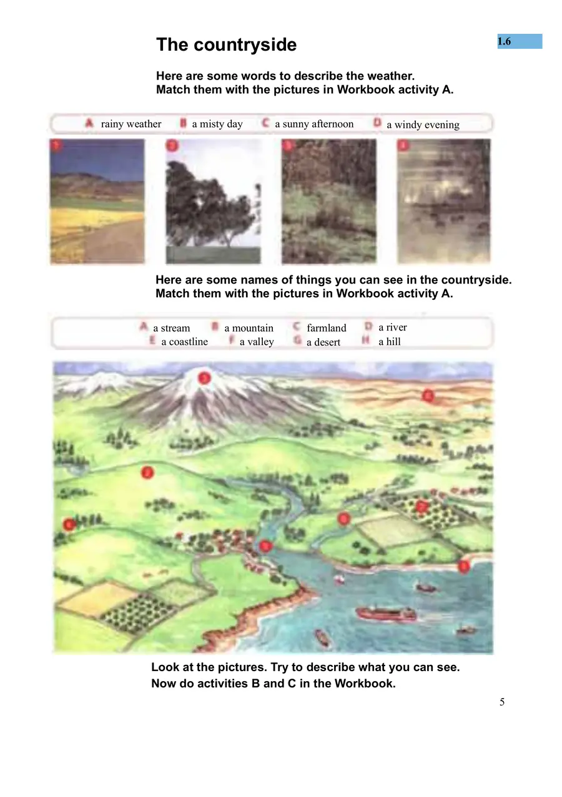

1.6 The countryside
Here are some words to describe the weather. Match them with the pictures in Workbook activity A. A rainy weather · B a misty day · C a sunny afternoon · D a windy evening
Here are some names of things you can see in the countryside. Match them with the pictures in Workbook activity A. A a stream · B a mountain · C farmland · D a river E a coastline · F a valley · G a desert · H a hill Look at the pictures. Try to describe what you can see. Now do activities B and C in the Workbook.
[
{
"letter": "A",
"word": "rainy weather",
"ar": "طقس ممطر",
"answer": "3"
},
{
"letter": "B",
"word": "a misty day",
"ar": "يوم ضبابي",
"answer": "4"
},
{
"letter": "C",
"word": "a sunny afternoon",
"ar": "ظهيرة مشمسة",
"answer": "1"
},
{
"letter": "D",
"word": "a windy evening",
"ar": "مساء عاصف",
"answer": "2"
}
][
{
"num": 1,
"question": "Which dot in the PB p. 5 illustration shows: A) a stream · D) a river · F) a valley · G) a desert?",
"model_answer": "Confirmed digits: E a coastline = 1, H a hill = 2, B a mountain = 3, C farmland = 7. Blurred red-circle positions: D a river = center wide blue river mouth; A a stream = narrow blue tributary to the right of the river; G a desert = tan sand dunes at top right; F a valley = low wooded dip on the far left between hills (needs clean paper copy check for exact printed digits 4, 5, 6, 8).",
"explain_ar": "الأرقام المؤكدة بوضوح في الصورة: 1 الساحل (E)، 2 التل (H)، 3 الجبل الثلجي (B)، 7 المزارع المحاطة بسياج (C). الدوائر الأربع المتبقية محددة موقعياً بدقة بانتظار التحقق من أرقامها في النسخة الورقية."
}
][
{
"num": 1,
"prompt": "1 A ______ is smaller than a river.",
"answers": [
"stream"
]
},
{
"num": 2,
"prompt": "2 You will find a ______ between two hills.",
"answers": [
"valley"
]
},
{
"num": 3,
"prompt": "3 You cannot see far on a ______ day.",
"answers": [
"misty"
]
},
{
"num": 4,
"prompt": "4 You cannot grow crops in a ______.",
"answers": [
"desert"
]
},
{
"num": 5,
"prompt": "5 ______ weather helps crops to grow.",
"answers": [
"Rainy"
]
},
{
"num": 6,
"prompt": "6 A ______ is bigger than a hill.",
"answers": [
"mountain"
]
}
][
{
"num": 1,
"prompt": "It was a ______ afternoon, so Tom decided to go for a ______ in the countryside. He lived beside the seal in a ______ between two hills. He ______ the smaller of the two hills and, when he got to the top, he stopped and ______ around him. In the distance, he could see the ______. There were some people lying on the ______ in the sun. He could see three ______ in the water. Maybe the people in them were ______. After his climb, Tom was ______. He saw a small ______ and decided to sit next to it and have a ______. The water was nice and ______. He lay back in the warm grass thinking. 'What a nice way to spend an afternoon.'",
"answers": [
"sunny",
"walk",
"valley",
"climbed",
"looked",
"coastline",
"beach",
"boats",
"fishing",
"hot",
"stream",
"drink",
"cold"
]
}
]{
"pb_text_vs_image": "طُوبقت النصوص والعناوين في PB ص 5 مع الصورة ومع الصور المضمَّنة الأصلية؛ صور الطقس 1–4 واضحة تماماً، و4 أرقام من الدوائر الحمراء في رسم المناظر (1 الساحل، 2 التل، 3 الجبل، 7 المزرعة) مؤكدة، بينما سُجّلت الدوائر الأربع المطموسة بدقة 327×218px في REVIEW_NEEDED.md دون تخمين.",
"wb_ocr_vs_image": "قُورنت صفحة WB ص 5–6 مع مخرجات tesseract.js eng: أخرجت OCR كلمة 'seal' في التمرين C (مطبوعة فعلياً seal بدل sea في الكتاب الرسمي) وحُفظت حرفياً مع التنبيه، كما صُحّح رقم 'I A' إلى '1 A' وأُعيد ربط الصندوق الكامل (13 كلمة من صفّين)."
}